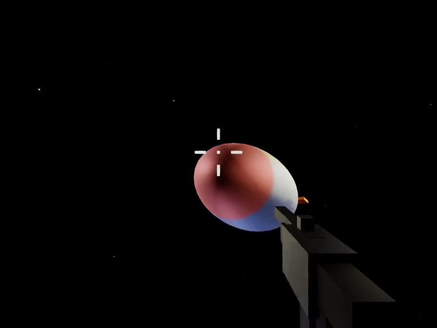
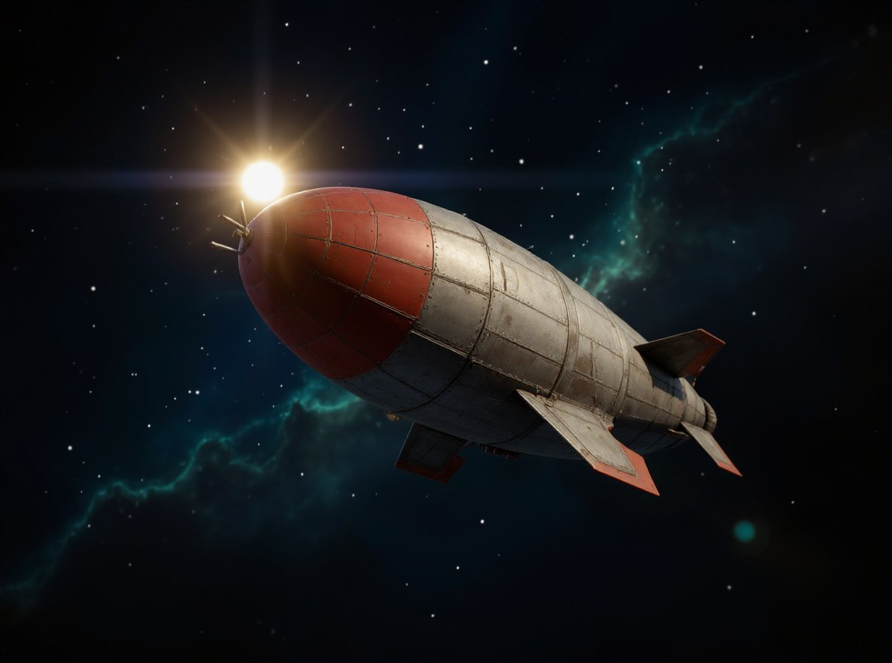
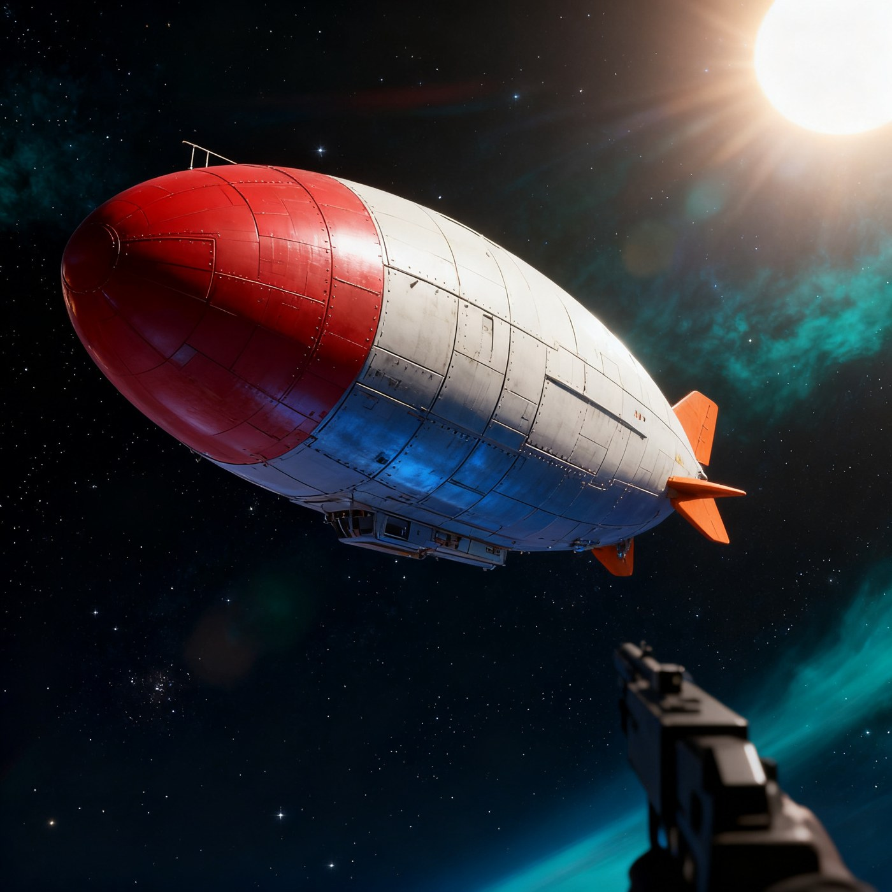
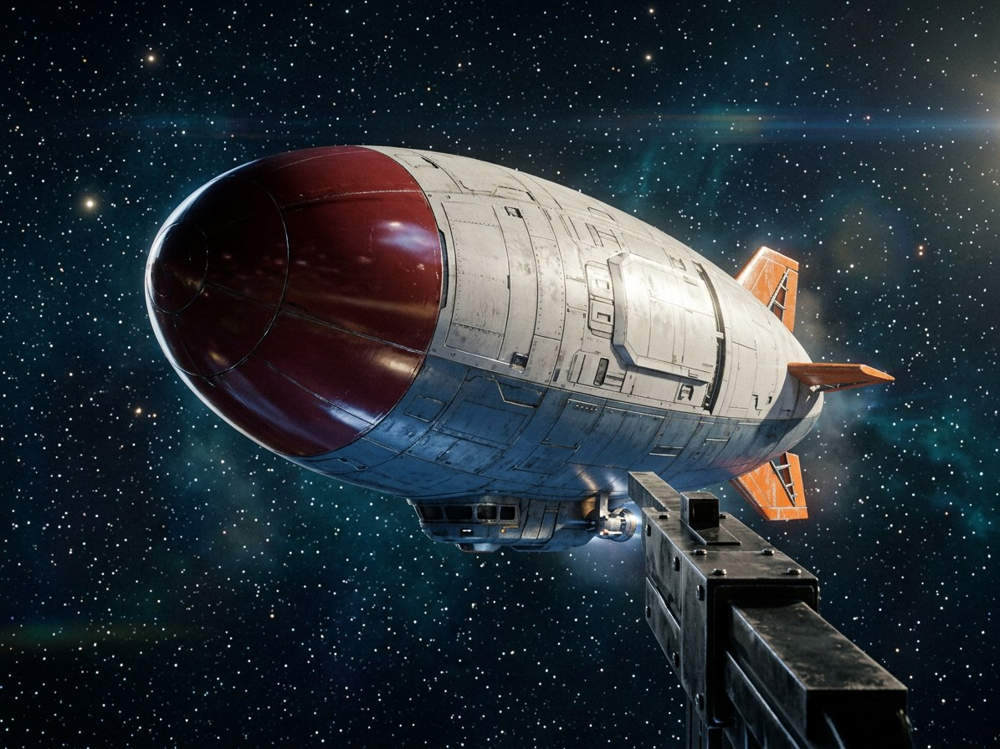
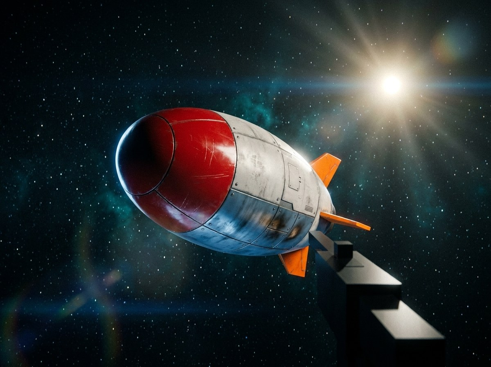
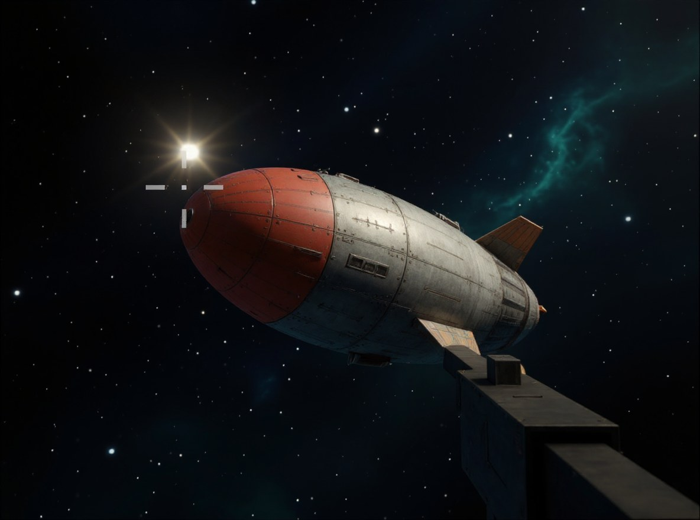
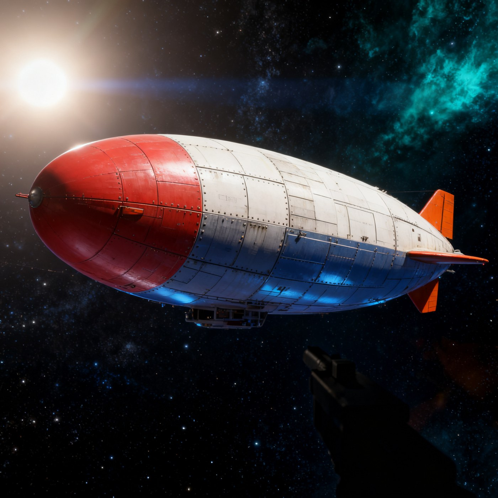

02 · 商业图像编辑模型横评
任务
把 01 篇产出的 episode 首帧——一张低多边形(low-poly)游戏画面——编辑成写实电影级太空场景,同时保留几何构图:飞船的形状、位置、机位、涂装,以及右下角的第一人称枪械剪影都不能动。这张编辑结果将作为 03 篇 Seedance 视频生成的参考图,所以构图保真度是第一指标,画质其次。

战况总表
| 模型 | endpoint | prompt 版本 | 成本/图 | 结果一句话 |
|---|---|---|---|---|
| FLUX.1 Kontext [pro] | fal-ai/flux-pro/kontext | v1 → v2 | $0.04 | 两轮都稳,构图服从好,写实感中规中矩 |
| FLUX.2 [pro] edit | fal-ai/flux-2-pro/edit | v1 | $0.00 | 输入端内容审查连拒 5 次,出局 |
| Seedream 4.0 edit | fal-ai/bytedance/seedream/v4/edit | v1 → v2 | $0.03 | 输出被裁成 1:1 方图(harness 传参问题,见下) |
| Nano Banana 2 edit | fal-ai/nano-banana-2/edit | v1 → v2 | $0.06 | 加构图锁后保真度跃升,最终胜出 |
| Gemini 3 Pro Image(NB Pro) | generativelanguage:gemini-3-pro-image | nbpro_v1plus | $0.134 | Round 1 最佳,但 prompt 多了一句(见公平性) |
Round 1:初赛(v1 prompt)




公平性翻车与 Round 2
Round 1 结束后用户抓出一个公平性缺陷:发给 NB Pro 的 prompt 比 fal 三家多了一句 "Preserve the composition exactly."——也就是说 NB Pro 的"构图保真领先"可能不是模型能力,而是 prompt 差异。于是把这句扩写成统一的 v2 构图锁定 prompt(锁构图、锁取景、锁纵横比、锁物体尺度,禁 zoom/crop/rotate),重跑 fal 三家:



坑:FLUX.2 [pro] edit 输入审查,连拒 5 次
拒绝发生在输入端:内容审查器盯上了画面里的第一人称枪。safety_tolerance 参数只管输出,绕不过输入审查。对本管线这是硬伤——我们所有 episode 帧都带枪,所以 FLUX.2 直接出局,$0 成本换来一条结论。
坑:Seedream 的 1:1 方图是我方 harness 的错
Seedream 4.0 edit 两轮都输出方图,第一反应是"模型不服从纵横比"——错。它的 image_size API 参数默认 square,我方 harness 从没传过 "auto";而 prompt 文本里写多少遍"keep aspect ratio"都覆盖不了 API 参数。要做公平的纵横比测试,必须显式传 image_size="auto"。先查自己的传参,再怪模型。
定律:构图锁定句对服从度有决定性影响
同一模型(NB2),v1 与 v2 唯一区别是结尾一句构图锁定,保真度就从"随意发挥"跃升到接近 NB Pro。跨模型对比里,任何一家 prompt 里多一句约束,排名就不可信——横评必须逐字对齐 prompt,否则测的是 prompt 不是模型。
三个 prompt 全文
v1 全文如下;另外两个版本共享同一正文,只在结尾追加构图约束句。
v1: Turn this low-poly game frame into a photorealistic cinematic sci-fi film still. KEEP the airship's exact shape, position, camera angle and livery - glossy red nose cone, white-grey mid hull, steel-blue belly, orange tail fins - and keep the first-person gun silhouette in the lower right corner. REPLACE the flat shading with detailed PBR spacecraft plating: panel lines, rivets, subtle weathering. Dramatic key light from a distant sun, cool rim light, deep-space background with a dense starfield and a faint teal nebula, volumetric light, anamorphic lens flare, fine film grain, IMAX quality.
nbpro_v1plus = v1 + "Preserve the composition exactly."
v2_complock = v1 + "Preserve the composition, framing, aspect ratio and object scale exactly - do not zoom, crop, or rotate."
结论与选型
最终选 NB2 v2(构图锁定版)作为 03 篇 Seedance 视频生成的参考图:v2 加锁后它的构图保真接近 NB Pro,单图 $0.06 对 $0.134,且走 fal 一个渠道省事。NB Pro 那 $0.134 走的是 11 个候选 Gemini key 里唯一开了计费的 key#5(key#0 免费档直接 429)——付费渠道本身也是横评成本的一部分。整场横评一张源图打完,总计约 $0.39。